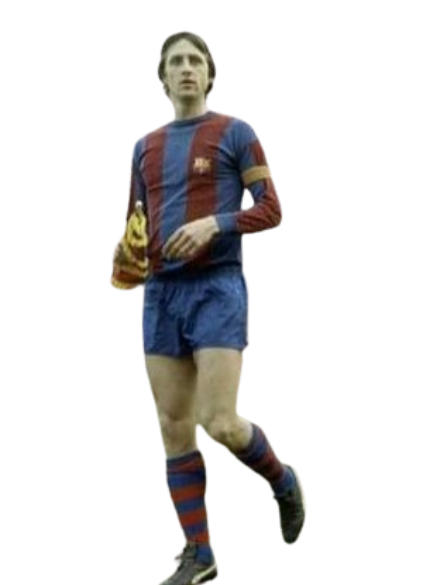
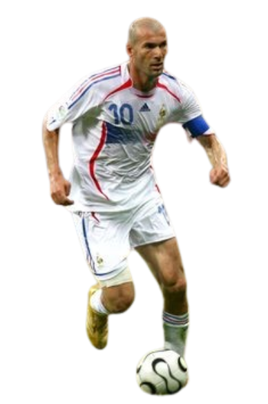
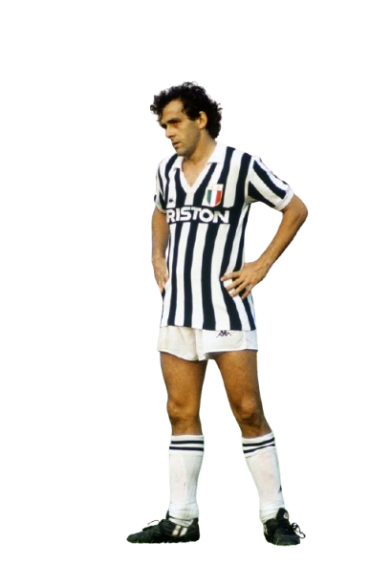

Todos los Ganadores
En la historia del futbol, muchas leyendas han participado y han
otorgado este premio como ahora Lionel Messi, Cristiano Ronaldo,
Michel Platini, Johan Cruyff, Marco van Basten, Franz Beckenbauer,
Ronaldo Nazário, Zinedine Zidane, Ronaldinho, George Best, Paolo
Rossi, Karl-Heinz Rummenigge, Alfredo Di Stéfano, Kevin Keegan,
Stanley Matthews, Kaká, Rivaldo, Fabio Cannavaro, Luka Modrić, Karim
Benzema, Lev Yashin, Roberto Baggio, Andriy Shevchenko, Luis Figo,
Pavel Nedved, George Weah, Jean-Pierre Papin.

Johan Cruyff
Johan Cruyff fue el genio que transformó el fútbol en arte. Con su
talento y visión, lideró la revolución del "fútbol total", ganando
tres Balones de Oro y dejando una huella eterna en el Ajax, el
Barcelona y el mundo entero. Su legado vive en cada pase, cada
idea y cada sueño de jugar bonito.

Zinedine Zidane
Zinedine Zidane fue la definición de la elegancia y la magia en el
campo. Su genio y control lo convirtieron en un símbolo de
grandeza, llevando a Francia a la gloria con su talento sublime.
Con un Balón de Oro y una Copa del Mundo, su legado es eterno,
siendo una inspiración para generaciones de futbolistas y fans.

Platini
Michel Platini fue un mago del balón, el líder indiscutible de
Francia en la década de los 80. Con su visión, técnica y capacidad
para decidir partidos, se convirtió en tres veces Balón de Oro,
dejando un legado imborrable como uno de los jugadores más
completos y elegantes de la historia del fútbol.